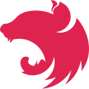

Kessix Tech
Sistemas multiplataforma, apps mobile, open source, cloud native, consultoria em infraestrutura e DevOps
Construímos produtos digitais e ajudamos empresas a rodar seus sistemas com confiabilidade, automação e segurança.
Kessi Diones
Engenheiro de Software · SRE & DevOps · Fundador da Kessix Tech
Sou o fundador da Kessix Tech. Resolvo problemas com tecnologias Cloud Native, com experiência em ambientes multi-cloud e foco em AWS. Atuo como SRE, DevOps e engenheiro de software, com foco em infraestrutura e plataformas.
Além da carreira, construo meus próprios produtos SaaS e sistemas, do banco de dados ao aplicativo, e levo essa mesma visão de confiabilidade e automação para projetos de clientes.
Certificações
- CKA: Certified Kubernetes Administrator
- AWS Certified Cloud Practitioner
- GitLab Certified Associate
- Harness Certified CD & GitOps Developer
- LPIC-1: Linux Professional Institute
Projetos desenvolvidos pela Kessix Tech
ProBarber
Plataforma de gestão para barbearias. O barbeiro se cadastra pelo aplicativo (Android e iOS), gerencia agenda, serviços e pendências, e o cliente agenda por um link público da barbearia, com pagamento via Pix. Cada barbearia escolhe entre agendamento comum, pagamento obrigatório ou pagamento opcional.
probarberapp.com.br →CARF ID
Controle de acesso por reconhecimento facial para escolas, integrado a catracas. Notifica os responsáveis na entrada e na saída dos alunos, aplica regras por etapa de ensino e bloqueios por inadimplência, com multi-tenant, auditoria imutável, modo offline e conformidade com a LGPD.
Do desenho à operação em produção
Ajudo times e empresas a colocar sistemas no ar com segurança e a mantê-los de pé.
Cloud & AWS
Arquitetura, migração, redução de custos e ambientes multi-cloud.
Kubernetes & Containers
Clusters, deploys, observabilidade e operação de aplicações em contêineres.
CI/CD & Automação
Pipelines, GitOps e infraestrutura como código com Terraform e Ansible.
Engenharia de Software
Do desenho do produto ao app e à web, com backend, banco de dados e pagamentos.
Tecnologias do dia a dia
Cloud
 AWS
AWSContainers e orquestração
 Kubernetes
Kubernetes Docker
DockerInfraestrutura como código e automação
 Terraform
Terraform Ansible
Ansible Shell Script
Shell Script GNU/Linux
GNU/LinuxCI/CD e GitOps
 GitHub
GitHub GitLab CI
GitLab CI Jenkins
Jenkins Azure DevOps
Azure DevOpsLinguagens
 Go
Go Python
Python TypeScript
TypeScriptWeb e mobile
 React / Native
React / Native Expo
Expo Next.js
Next.js
NestJSDados e backend
 PostgreSQL
PostgreSQL Supabase
Supabase